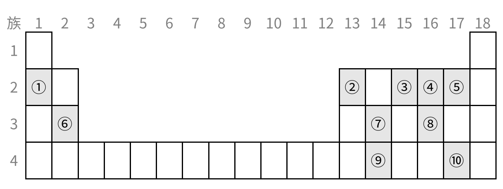
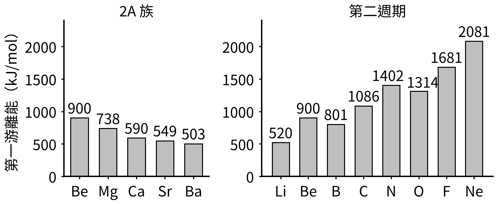
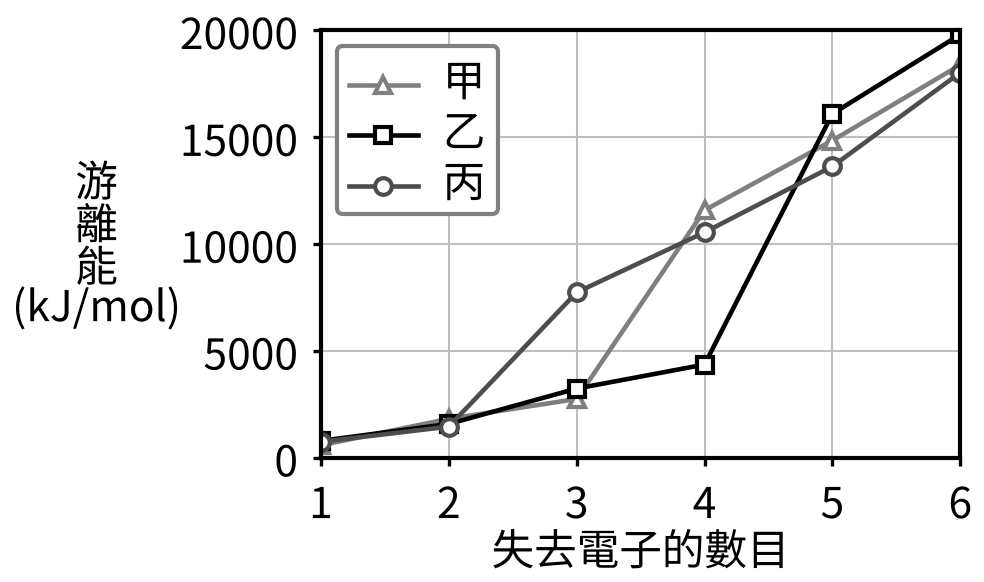
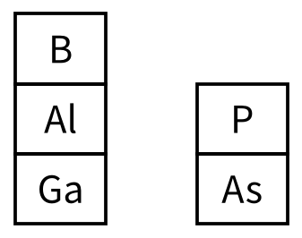

基礎題
下列關於電負度的敘述，何者正確？
- (A) 同一族元素，電負度大致隨原子序增加而增加
- (B) 同一週期元素（8A族除外），電負度大致隨原子序增加而減少
- (C) 一般而言，金屬性愈強者，電負度愈小
- (D) 電負度相差愈小的兩原子所形成的化學鍵，電子轉移程度愈大
- (E) 電負度愈小，表示愈容易吸引電子。
看答案與詳解
答案：(C)
(B) ✘ 同週期由左而右增加
(C) ✔ 金屬性強＝易失電子，吸引鍵結電子能力弱
(D) ✘ 差愈大，電子轉移程度愈大（離子性愈強）
(E) ✘ 電負度愈大愈容易吸引鍵結電子
下列元素中，何者最易獲得電子？
- (A) Li
- (B) Be
- (C) C
- (D) F
- (E) Al
看答案與詳解
答案：(D)
故選 (D)
下列元素，何者之非金屬性質最明顯？
- (A) I
- (B) F
- (C) C
- (D) Si
- (E) As
看答案與詳解
答案：(B)
故選 (B)
元素的第一游離能是指下列哪一個過程所需的能量？
- (A) X(s) → X+(s)＋e−
- (B) X(g) → X+(g)＋e−
- (C) X(g)＋e− → X−(g)
- (D) X(l) → X+(aq)＋e−
- (E) X+(g) → X2+(g)＋e−
看答案與詳解
答案：(B)
(C) 與電子親和力有關；(E) 為第二游離能
故選 (B)
鹼金屬 Li、Na、K、Rb 的第一游離能大小順序，何者正確？
- (A) Li＞Na＞K＞Rb
- (B) Rb＞K＞Na＞Li
- (C) Na＞Li＞K＞Rb
- (D) Li＞K＞Na＞Rb
- (E) 四者相等
看答案與詳解
答案：(A)
故選 (A)
下列第三週期元素第一游離能的大小比較，何者正確？
- (A) Mg＞Al
- (B) S＞P
- (C) Na＞Mg
- (D) Cl＞Ar
- (E) Al＞Si
看答案與詳解
答案：(A)
(B) ✘ P 的 3p3 半滿較穩定，P＞S
(C)(D)(E) ✘ 一般同週期往右變大：Mg＞Na、Ar＞Cl、Si＞Al
下列元素中，電負度最大者為何？
- (A) O
- (B) N
- (C) Cl
- (D) F
- (E) S
看答案與詳解
答案：(D)
故選 (D)
下列化學鍵中，何者的極性最大？
- (A) H−F
- (B) H−Cl
- (C) H−Br
- (D) H−I
- (E) C−H
看答案與詳解
答案：(A)
F 電負度最大，與 H 的差最大 → H−F 極性最大
故選 (A)
具有下列電子組態的原子中，何者的第一游離能最大？
- (A) [Ne]3s1
- (B) [Ne]3s23p1
- (C) [Ne]3s23p5
- (D) [Ne]3s23p6
- (E) [Ar]4s1
看答案與詳解
答案：(D)
鈍氣組態最穩定，同週期中 Ar 的 IE1 最大
故選 (D)
具有下列電子組態的原子，何者最容易形成 ＋2 價陽離子？
- (A) [Ne]3s23p4
- (B) [Ar]4s1
- (C) [Ar]4s2
- (D) [Ne]3s23p6
- (E) [He]2s22p5
看答案與詳解
答案：(C)
(A) S、(E) F 易得電子；(B) K 易形成 ＋1；(D) Ar 不易形成離子
故選 (C)
有關第一游離能，下列敘述何者正確？
- (A) 第一游離能愈小的元素，愈容易失去電子
- (B) 鈍氣的第一游離能最小
- (C) 同族元素由上而下，第一游離能增大
- (D) 游離過程會放出能量
- (E) 金屬元素的第一游離能通常比非金屬大
看答案與詳解
答案：(A)
(B) ✘ 鈍氣在同週期中最大
(C) ✘ 減小
(D) ✘ 游離需吸收能量
(E) ✘ 金屬通常較小
下列元素中，何者的第一游離能最小？
- (A) Li
- (B) Na
- (C) K
- (D) Cs
- (E) F
看答案與詳解
答案：(D)
故選 (D)
下列第三週期元素中，何者的電負度最小？
- (A) Na
- (B) Mg
- (C) Al
- (D) Si
- (E) Cl
看答案與詳解
答案：(A)
故選 (A)
H−Cl 鍵中，共用電子對偏向哪一個原子？
- (A) H，因為 H 的電負度較大
- (B) Cl，因為 Cl 的電負度較大
- (C) H，因為 H 的原子較小
- (D) Cl，因為 Cl 的游離能較小
- (E) 不偏向任何一方
看答案與詳解
答案：(B)
故選 (B)
下列第二週期元素中，何者的第一游離能最大？
- (A) Li
- (B) B
- (C) N
- (D) O
- (E) Ne
看答案與詳解
答案：(E)
故選 (E)
下列元素中，何者的電負度最大？
- (A) Cl
- (B) Br
- (C) I
- (D) S
- (E) P
看答案與詳解
答案：(A)
故選 (A)
進階題
下列原子中，何者的第二游離能最大？
- (A) Li
- (B) Be
- (C) B
- (D) C
- (E) N
看答案與詳解
答案：(A)
其餘 IE2 移去的仍是價電子
故選 (A)
有關電負度，下列敘述何者正確？
- (A) 電負度表示原子在分子中吸引共用電子對的能力
- (B) 鈍氣的電負度最大
- (C) 同族元素由上而下，電負度逐漸增大
- (D) 金屬元素的電負度一般比非金屬大
- (E) 電負度愈小的元素，愈容易吸引電子
看答案與詳解
答案：(A)
(B) ✘ 鈍氣一般不列電負度；電負度最大者為 F（4.0）
(C) ✘ 同族由上而下，電負度減小
(D) ✘ 金屬電負度較小
(E) ✘ 電負度愈大，吸引電子能力愈強
依電負度判斷，下列化合物中何者的鍵結最接近離子鍵？
- (A) CsF
- (B) NaCl
- (C) MgO
- (D) AlCl3
- (E) HF
看答案與詳解
答案：(A)
Cs 電負度最小、F 最大 → CsF 差值最大
故選 (A)
下列等電子粒子中，移去一個電子所需能量最大者為何？
- (A) O2−
- (B) F−
- (C) Ne
- (D) Na+
- (E) Mg2+
看答案與詳解
答案：(E)
核電荷愈大，對電子吸引愈強 → Mg2+（Z＝12）最大
故選 (E)
某元素的各級游離能（kJ／mol）為：1000、2252、3357、4556、7004、8496、27107。此元素最可能位於週期表的第幾族？
- (A) 第 2 族
- (B) 第 14 族
- (C) 第 15 族
- (D) 第 16 族
- (E) 第 17 族
看答案與詳解
答案：(D)
故選 (D)
OF2 中氧的氧化數為 ＋2，而 H2O 中氧的氧化數為 －2，主要原因為何？
- (A) F 的電負度比 O 大，鍵結電子偏向 F
- (B) O 的電負度比 F 大
- (C) F 的原子半徑比 O 大
- (D) OF2 為離子化合物
- (E) O 的第一游離能比 F 大
看答案與詳解
答案：(A)
O−F 鍵中 F 較大 → O 為 ＋2；O−H 鍵中 O 較大 → O 為 －2
故選 (A)
N、O、F 三者第一游離能的大小順序為何？
- (A) F＞O＞N
- (B) F＞N＞O
- (C) N＞O＞F
- (D) O＞N＞F
- (E) N＞F＞O
看答案與詳解
答案：(B)
N 的 2p3 半滿較穩定，所以 N＞O
故選 (B)
某元素的各級游離能（kJ／mol）依序為 801、2427、3660、25026，此元素最可能位於週期表的哪一族？
- (A) 第 1 族
- (B) 第 2 族
- (C) 第 13 族
- (D) 第 14 族
- (E) 第 15 族
看答案與詳解
答案：(C)
IE2／IE1≒3.0 只是因為 IE1 移去 2p、IE2 移去 2s 電子，仍在價殼層
故選 (C)
F、O、N、C 四種元素的電負度大小順序為何？
- (A) F＞O＞N＞C
- (B) C＞N＞O＞F
- (C) O＞F＞N＞C
- (D) F＞N＞O＞C
- (E) N＞O＞F＞C
看答案與詳解
答案：(A)
〔對照〕游離能有 N＞O 的例外，電負度沒有
故選 (A)
Na+ 與 Ne 都有 10 個電子，移去一個電子時，何者需要的能量較大？原因為何？
- (A) Na+，因為核電荷較大，對電子吸引力較強
- (B) Ne，因為是鈍氣
- (C) 兩者相同，因為電子組態相同
- (D) Ne，因為原子半徑較小
- (E) Na+，因為帶正電的離子較穩定
看答案與詳解
答案：(A)
故選 (A)
某元素的各級游離能（kJ／mol）依序為 IE1＝578、IE2＝1817、IE3＝2745、IE4＝11577、IE5＝14842。下列敘述哪些正確？（多選）
- (A) 價電子數為 3
- (B) 此元素可能為 Al
- (C) 常見的氧化物化學式為 M2O3
- (D) IE2 約為 IE1 的 3 倍，所以價電子數為 1
- (E) 移去第 4 個電子時，移去的是內層電子
看答案與詳解
答案：(A)(B)(C)(E)
(A)(B) ✔ 第 13 族，如 Al
(C) ✔ M3+ 與 O2− → M2O3
(D) ✘ IE4／IE3≒4.2 是所有比值中最大的，增加約 8800 kJ／mol；IE1、IE2 移去的 3p、3s 電子都在價殼層，IE2 雖約為 IE1 的 3 倍，仍不算大增
(E) ✔
第三週期元素由 Na 到 Cl，下列性質中哪些大致隨原子序增加而增大？（多選）
- (A) 原子半徑
- (B) 電負度
- (C) 第一游離能
- (D) 金屬性
- (E) 價電子數
看答案與詳解
答案：(B)(C)(E)
(B) ✔ (C) ✔ 大致增加（Mg＞Al、P＞S 例外）(E) ✔
(A)(D) ✘ 減小
有關第二週期元素第一游離能的例外，下列敘述哪些正確？（多選）
- (A) Be 的第一游離能大於 B
- (B) N 的第一游離能大於 O
- (C) B 移去的是 2p 電子，能量比 2s 高，較易移去
- (D) O 的 2p 有一對成對電子互相排斥，較易移去一個電子
- (E) Ne 的第一游離能小於 F
看答案與詳解
答案：(A)(B)(C)(D)
(B)(D) ✔ N 2p3 半滿；O 有成對電子的斥力
(E) ✘ Ne 最大
有關鎂的各級游離能，下列敘述哪些正確？（多選）
- (A) IE3 遠大於 IE2
- (B) IE2 是由 Mg+ 移去 3s 電子所需的能量
- (C) IE2＜IE3＜IE4
- (D) IE1＞IE2
- (E) Mg 常形成 Mg2+
看答案與詳解
答案：(A)(B)(C)(E)
(B) ✔ Mg+：[Ne]3s1
(C) ✔ 各級游離能依序遞增
(D) ✘ IE1＜IE2
(E) ✔ 有 2 個價電子
有關游離能與元素性質，下列敘述哪些正確？（多選）
- (A) 一般而言，第一游離能愈小，金屬性愈強
- (B) 在穩定元素中，Cs 的第一游離能最小
- (C) 所有元素中，He 的第一游離能最大
- (D) 金屬元素的電負度普遍大於非金屬元素
- (E) 同族元素由上而下，第一游離能增大
看答案與詳解
答案：(A)(B)(C)
(B) ✔ 週期表左下角最小；Cs（376 kJ／mol）是所有元素中最小的
(C) ✔ He 約 2372 kJ／mol
(D) ✘ 金屬電負度較小
(E) ✘ 減小
下表是元素週期表的一部分，回答下列問題：自表中所示①～⑩，選出符合下列(1)~(4)各小題的元素，並以元素符號作答：

(1)第一游離能最大者？
(2)主量子數n＝3，且電負度最小者？
(3)哪一個元素的原子半徑最小？
(4)價電子組態為ns2np4，且游離能最小者？
看答案與詳解
答案：(1) F (2) Mg (3) F (4) S
(1) 同週期往右、同族往上增大 → F
(2) n＝3 為第三週期：Mg、Si、S，最左的 Mg 電負度最小
(3) 右上角最小 → F
(4) 16 族：O、S，同族往下游離能變小 → S
翔翔和泰泰分別查詢資料，整理了部分元素的游離能的數值大小並繪製成圖形如下圖。他們發現同族元素的游離能由上往下遞減，而同週期主族元素由左往右呈現鋸齒狀增加。他們記得老師在上課時說過，元素的游離能大小會有這樣的變化原因，可以從幾個因素來思考，如半徑大小、核電荷多寡、電子組態等。試以元素符號回答下列問題：

(1)寫出2A族元素（Be至Ba）第一游離能大小順序？
(2)承(1)請解釋此順序原因？
(3)寫出第二週期元素第一游離能大小順序？
(4)承(3)請解釋游離能原子序4大於5及原子序7大於8的原因？
看答案與詳解
答案：(1) Be＞Mg＞Ca＞Sr＞Ba (2) 由上而下半徑變大，價電子受核吸引變弱 (3) Li＜B＜Be＜C＜O＜N＜F＜Ne (4) Be 的 2s 全滿、N 的 2p 半滿較穩定
(3) 同週期大致增加，但 Be＞B、N＞O
(4) Be（2s2）全滿較穩定，B 移去的是能量較高的 2p 電子；N（2p3）半滿較穩定，O 的 2p 有一對成對電子互相排斥，較易移去
鈉與鉀都會和水劇烈反應產生氫氣，鉀的反應比鈉更劇烈。（Na 的 IE1＝496 kJ／mol，K 的 IE1＝419 kJ／mol）
(1) 寫出鈉與水反應的化學反應式。
(2) 從游離能說明為什麼鉀比鈉更容易反應。
看答案與詳解
答案：(1) 2Na＋2H2O → 2NaOH＋H2 (2) K 的 IE1 較小，較易失去電子
(2) K 比 Na 多一層電子殼層，價電子離核較遠，IE1 較小（419＜496），更容易失去電子，所以反應更劇烈
大考／素養題
下列有關元素性質的敘述，哪些正確？（多選）
- (A) 同一原子的游離能和電子親和力的大小相同，僅符號相反
- (B) 第二週期原子的電子親和力中，以氟所釋出的能量最大
- (C) 第三週期原子的半徑大小隨原子序的增加而增大
- (D) 氟原子的電子親和力絕對值大於其游離能
- (E) 一般而言，金屬原子的電負度小於非金屬原子的電負度
看答案與詳解
答案：(B)(E)
(B) ✔ 第二週期中 F 的電子親和力最大（電子親和力為舊課綱內容，僅供參考）
(C) ✘ 同週期由左而右半徑減小
(D) ✘ F 的游離能（1681 kJ／mol）遠大於電子親和力（約 328 kJ／mol）
(E) ✔
甲、乙、丙為週期表中第三列的三種元素，右圖表示其游離能與失去電子數目的關係。下列有關甲、乙、丙元素的敘述，哪一選項錯誤？

- (A) 甲的原子半徑比丙小
- (B) 乙的電負度比丙大
- (C) 甲的氧化物可溶於強酸中，亦可溶於強鹼中
- (D) 乙與碳形成的化合物具有高熔點、高沸點和高延展性的特性
- (E) 丙元素的氧化物溶於水呈鹼性
看答案與詳解
答案：(D)
(A) ✔ Al＜Mg (B) ✔ Si＞Mg (C) ✔ Al2O3 為兩性
(D) ✘ SiC 為網狀共價固體，熔點高但硬而脆，沒有延展性
(E) ✔ MgO 為鹼性氧化物
現有 W、X、Y、Z 四種原子，其相關敘述如下：
(1) W 為第17族（鹵素）中電負度最大者
(2) X 是第四週期元素，其所形成最穩定的離子X2+具有全滿之d 軌域
(3) Y 形成的－2 價陰離子Y2−與第三週期的鈍氣元素之電子組態相同
(4) Z 為第2 族（鹼土族）非放射性元素中原子序最大者
根據以上之資料，則下列敘述，哪些正確？（多選）
- (A) 0.1 M 的X2+水溶液與0.1 M 的Y2−水溶液混合後，會產生沉澱
- (B) 0.1 M的Z2+水溶液可與硫酸鈉水溶液產生沉澱
- (C) X2+的電子組態具有4s 軌域的電子
- (D) W 原子是鹵素原子中半徑最大者
- (E) 這四種原子中，Z 原子的原子半徑最大
看答案與詳解
答案：(A)(B)(E)
(A) ✔ ZnS 沉澱
(B) ✔ BaSO4 沉澱
(C) ✘ Zn2+ 已失去 4s 電子
(D) ✘ F 是鹵素中最小的
(E) ✔ Ba 在第六週期最左側
右表為週期表的一部分，試問下列有關該五種元素及其化合物性質的敘述，哪一項正確？

- (A) As 屬於金屬元素
- (B) 電負度最大者為Ga
- (C) 第一游離能最小者為B
- (D) 非金屬性質最強者為P
- (E) 氫氧化鋁可溶於酸性溶液，但不溶於鹼性溶液
看答案與詳解
答案：(D)
(B) ✘ 電負度右上大，表中 P 最大、Ga 較小
(C) ✘ B 在右上方，IE1（801）較大；最小者為 Al（578），Ga（579）與其相近
(D) ✔ P 位於表中最右上方
(E) ✘ Al(OH)3 為兩性，酸、鹼都可溶
下列有關第17族元素（鹵素）的性質中，哪一個隨原子序之增大而降低或變小？
- (A) 原子半徑
- (B) 第一游離能
- (C) 價電子數
- (D) 電子親和力
- (E) 沸點
看答案與詳解
答案：(B)
(C) ✘ 都是 7
(D) ✘ Cl 最大，並非一路遞減（電子親和力為舊課綱內容，僅供參考）
(E) ✘ 分子量增大，沸點升高
▲ 第 6-40～6-41 題為題組：甲、乙、丙為原子序小於 20 的三種元素，它們的前四個游離能（kJ／mol）如下表：
甲：496、4562、6910、9543
乙：738、1451、7733、10543
丙：1086、2353、4621、6223
甲、乙、丙最可能依序為下列哪一組？
- (A) Na、Mg、C
- (B) Li、Be、B
- (C) K、Ca、Si
- (D) Na、Al、N
- (E) Mg、Na、C
看答案與詳解
答案：(A)
數值與 Na（496）、Mg（738）、C（1086）相符 → (A)
承上題，下列敘述哪些正確？（多選）
- (A) 甲與氯形成的化合物化學式為 甲Cl
- (B) 乙的常見離子為 乙2+
- (C) 丙的電負度在三者中最大
- (D) 甲的原子半徑在三者中最小
- (E) 乙的 IE3 大增，是因為移去的是 2p 內層電子
看答案與詳解
答案：(A)(B)(C)(E)
(B) ✔ Mg2+
(C) ✔ C 為非金屬，電負度最大
(D) ✘ Na 在第三週期最左，半徑最大
(E) ✔ Mg2+ 為 [Ne]，再移去的是 2p 電子